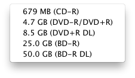

Segmented Disk Images
DropDMG lets you split large disk images into multiple pieces, to keep the size of each file below a set limit. This can be useful for transferring large files over the Internet or burning them to disc. The filenames of the pieces will end with .dmg, .002.dmgpart, .003.dmgpart, etc.
To access the contents of a segmented disk image, make sure the .dmg file and all the .dmgpart files are in the same folder. (If you had burned the pieces to disc you would need to copy them all back to the same folder on a hard drive.) Then double-click the .dmg file or use DropDMG’s Mount Image… command.
To split an existing disk image into smaller pieces, set the segment size and then use the Convert Image/Archive… command.
To join multiple segments into a single disk image file, make sure that all the segments are in the same folder, uncheck Limit segments to ___ MB, and then use the Convert Image/Archive… command.
Segmented ZIP Archives
DropDMG can create segmented ZIP archives (e.g. .z01, .z02, .zip). Such archives cannot be expanded by Mac OS X’s built-in Archive Utility, but there are free third-party expansion utilities such as The Unarchiver.
Segment Sizes
Sizes are specified in megabytes (base 10). The Sizes pop-down menu lets you enter common segment sizes for CDs, DVDs, and Blu-ray discs. The sizes are chosen so that a segment of that size can be burned to the disc as a file. The actual disc capacities may vary slightly, as will the sizes of the segments produced by the disk imaging engine.
